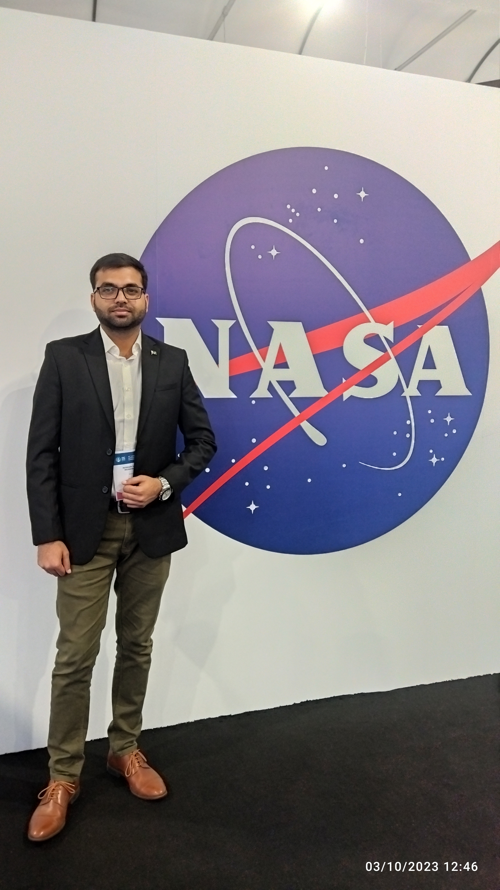

From avionics thermal qualification to full-vehicle aerodynamics.


I'm a Mechanical Engineer, trained at Air University in Islamabad. Most of my work has been about the same question: whether airflow, heat and structural load will let a piece of hardware survive in the field. I started out cooling avionics boxes bolted into fighter aircraft bays. These days the work is CFD and fluid-structure interaction on unmanned aircraft, small-scale turbomachinery and ground vehicles.
I currently work as an Aerodynamics Engineer at Baykar Technologies, across Pakistan and Türkiye, where I run CFD on UAV airframes and propeller engines, conduct FSI-based aeroelastic flutter analysis, build VN-diagrams and flight envelopes, and support hardware-in-the-loop (HILS) development with aerodynamic parameters.
Before that, I led aerothermal research at Shocks & Stars Engineering and at Air University's AEROFLUX Lab, qualifying avionics LRUs under MIL-STD/MIL-E-5400, running hypersonic scramjet and plasma-arc thruster analysis, and securing government research grants from SPRC along the way.

Four roles, from LRU cooling to full-vehicle aerodynamics
Aerodynamics Engineer
- CFD analysis for UAV airframes and propeller engines, optimizing aerodynamic efficiency and performance
- Static and dynamic stability analysis feeding flight control design
- Aerodynamic parameter calculation for hardware-in-the-loop (HILS) development
- 2-way FSI aeroelastic analysis to determine flutter boundaries and structural limits
- G-load structural assessments on design modifications
- VN-diagram development and flight-envelope definition
- Structural ground testing of aerostructures, validating computational models
- Modal analysis to identify and mitigate resonance risk
Aerothermal Research Lead Engineer
- Aerothermal design analysis of airborne electronics for AEROFLUX III across flight regimes
- Analytical and computational heat-transfer analysis of LRUs in conditioned and unconditioned bays
- Computational hypersonic aerothermodynamic and combustion analysis of a scramjet engine
- Computational analysis of plasma-arc thrusters using COMSOL Multiphysics
- Developed novel algorithms and high-fidelity math models for thermo-fluid problems
- Response-surface DoE method for full flight-envelope analysis
- MIL-E-5400 thermal qualification for PAF's Airworthiness Certification Authority
- Secured PKR 1.5M (SPRC) and Government of Pakistan research grants
Aerothermal Lead Engineer
- Analytical and computational thermal analysis of avionics LRUs in conditioned bays of high-performance aircraft
- MIL-STD-5400 thermal design qualification for PAF's Airworthiness Certification Authority
- Normal- and failure-mode thermal analysis of existing designs
- Designed multiple passive and active heat-transfer modes for airborne electronics
- Secured PKR 2.5M research grant from SPRC
Undergraduate Research Assistant
- Thermal analysis of avionics LRUs in conditioned bays of commercial aircraft
- Analytical and computational thermal analysis for the AEROFLUX I programme
- MIL-E-5400 thermal design qualification
- Designed passive and active heat-transfer modes for LRU operation
- Secured PKR 1.5M research grant from SPRC